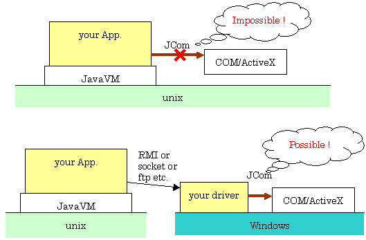

インストール方法
jcom2xx.zipを解凍して下さい。(xxはバージョンにより異なります)
JComにはjcom.jarとjcom.dllの２つのファイルが必要です。
jcom.jar は (java-home)/lib/ext/ 、およびCLASSPATHで設定したディレクトリの下のlib/ext/に入れて下さい。
jcom.dll は (java-home)/bin/ に入れて下さい。
(java-home)は、java.lang.System.getProperty("java.home"); で
知ることが出来ます。
技術情報
サポートしているVARIANT型
サポートしているVARIANT型を以下に示します。
推奨する型はVT_I4, VT_R8, VT_BOOL, VT_BSTR, VT_DISPATCH です。
新規にＣＯＭを作成する場合は、他の型よりこれらの型を使うことを勧めます。
|
サポートしているVARIANT型 |
| VT_UI1 |
java.lang.Byte |
| VT_I2 |
java.lang.Short |
| VT_I4 |
java.lang.Integer |
| VT_R4 |
java.lang.Float |
| VT_R8 |
java.lang.Double |
| VT_BOOL |
java.lang.Boolean |
| VT_BSTR |
java.lang.String |
| VT_DATE |
java.util.Date |
| VT_CY |
jp.ne.so_net.ga2.no_ji.jcom.VariantCurrency |
| VT_ERROR |
jp.ne.so_net.ga2.no_ji.jcom.VariantError |
| VT_UNKNOWN |
jp.ne.so_net.ga2.no_ji.jcom.IUnknown |
| VT_DISPATCH |
jp.ne.so_net.ga2.no_ji.jcom.IDispatch |
| VT_UI1|VT_BYREF |
byte[] |
| VT_I2|VT_BYREF |
short[] |
| VT_I4|VT_BYREF |
int[] |
| VT_R4|VT_BYREF |
float[] |
| VT_R8|VT_BYREF |
double[] |
| VT_BOOL|VT_BYREF |
boolean[] |
| VT_BSTR|VT_BYREF |
java.lang.String[] |
Visual-BasicとJavaとの対応表
Visual-BasicとJavaとの変数の型の対応を示します。
以下の型についてのみ利用することができます。
| COM |
Java |
Visual-BASIC |
| VT_UI1 |
java.lang.Byte |
ByVal As Byte |
| VT_I2 |
java.lang.Short |
ByVal As Integer |
| VT_I4 |
java.lang.Integer |
ByVal As Long |
| VT_R4 |
java.lang.Float |
ByVal As Single |
| VT_R8 |
java.lang.Double |
ByVal As Double |
| VT_BOOL |
java.lang.Boolean |
ByVal As Boolean |
| VT_BSTR |
java.lang.String |
ByVal As String |
| VT_DATE |
java.util.Date |
ByVal As Date |
| VT_CY |
jp.ne.so_net.ga2.no_ji.jcom.VariantCurrency |
ByVal As Currency |
| VT_ERROR |
jp.ne.so_net.ga2.no_ji.jcom.VariantError |
? |
| VT_UNKNOWN |
jp.ne.so_net.ga2.no_ji.jcom.IUnknown |
? |
| VT_DISPATCH |
jp.ne.so_net.ga2.no_ji.jcom.IDispatch |
? |
| VT_UI1|VT_BYREF |
byte[] |
ByRef As Byte |
| VT_I2|VT_BYREF |
short[] |
ByRef As Integer |
| VT_I4|VT_BYREF |
int[] |
ByRef As Long |
| VT_R4|VT_BYREF |
float[] |
ByRef As Single |
| VT_R8|VT_BYREF |
double[] |
ByRef As Double |
| VT_BOOL|VT_BYREF |
boolean[] |
ByRef As Boolean |
| VT_BSTR|VT_BYREF |
java.lang.String[] |
ByRef As String |
サンプル。
Visual-BASIC側のソース
Function foo(ByVal no As Long, ByRef str As String) As Long
...
End Function
Java側のソース
ReleaseManager rm = new ReleaseManager();
try {
IDispatch app = new IDispatch(rm, "Project1.Class1");
Integer no = new Integer(4);
String[] str = new String[1];
str[0] = "文字列";
Object[] param = new Object[] { no, str };
Integer retcode = (Integer)app.method( "foo", param );
}
catch ( Exception e ) {
e.printStackTrace();
}
finally {
rm.release();
}
日付型について
JavaのDateの定義は次のとおりです。
number of milliseconds since January 1, 1970, 00:00:00 GMT
一方、COMのDATEはdoubleで管理されており、1日=1.0です。基準となる日時は
次のとおりで、ロケールの概念がありません。
1899 年 12 月 30 日午前零時 0.00
1900 年 1 月 1 日午前零時 2.00
基準となる日時も違いますし、型や精度も違います。
すなわちJavaのDateは国際化に対応していますが、
ＣＯＭのDATEは現地時間のみしかないので、ロケール情報がないと、
その時間が一体どこの時間かがわかりません。
JComでは、COMのDATEを現地時間とみなして変換しています。
Unix/Linux から COM を実行できるか？
Unix/Linuxの上ではCOMは動かないので、下記のような構成にすれば動かすことができます。
しかし、ドライバについても作成しなければならないので、面倒です。
